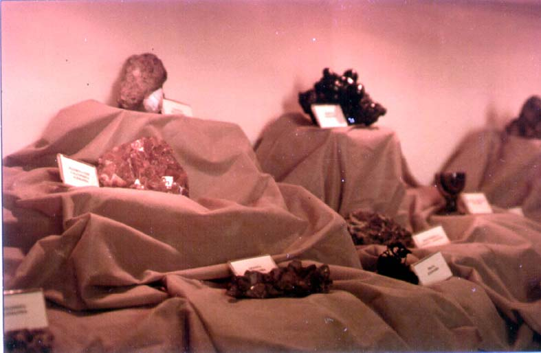

|
|  |
|
Museu Nacional (Rio de Janeiro), Werner collection of minerals
|
One of the ways to study the construction of national 'centres of calculation' is to look at the processes of acquiring national collections. Significantly, specimens during the first half of the century would often have to travel from the 'interior' through the metropolitan space of European knowledge and classification before they entered the 'national museum': a rock, plant, or animal only became a 'specimen' once it had passed through an exterior –European– space of mediation which accorded it its place in the classificatory grid of the natural sciences. The Werner collection of minerals, for instance, was purchased in 1818 by the National Museum of Rio de Janeiro from the German geologist Pabst von Ohain, at a price of twelve thousand réis.
|